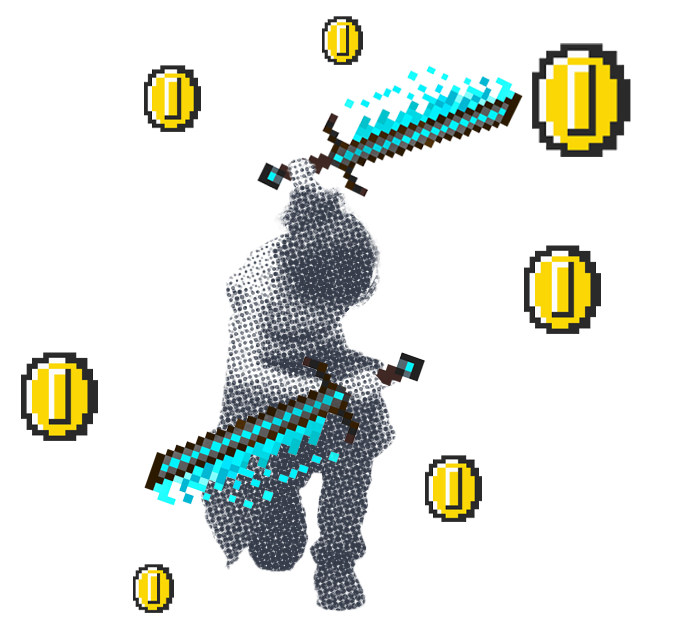

Hi! I’m Huang Chunjun, a master's student at the University of Shanghai for Science and Technology. I hold a bachelor's degree from Shanghai Institute of Visual Arts, where I majored in Product Design with a focus on sustainable furniture.
During my undergraduate studies, I developed strong hands-on skills and expertise in physical modeling and fabrication.
Currently, I’m pursuing a master's degree in Product Design and Innovation Engineering. In graduate school, my thinking has shifted toward a more technology- and logic-driven approach. I began to view design from a more systematic perspective, placing greater emphasis on structure, reasoning, and data-informed decision-making.
System Thinking & Design Logic
Use of Digital Tools
Design Research & Academic Expression
Handcraft & Modeling Skills
I was first introduced to XR technology while working on a project with my professor, and that experience gradually led me into the field of computer science. At first, I was simply fascinated by how novel it was, but over time, I developed a genuine interest. Especially when I began to write code, I felt like I was stepping into a completely new world—and slowly learning to navigate it.
As I became more involved in project development, I started asking myself:
1) How can we make this technology more accessible and appealing to a wider audience?
2) How can we design more immersive and engaging interactions?
3) Is it possible to create systems that even non-technical users can operate with ease?
These questions motivated me to further explore immersive interaction, human-centered experience, and user-friendly design.
I’ve also always been intrigued by game-like interactions, so I hope to pursue a PhD that allows me to dive deeper into the intersection of computer science, human-computer interaction, and immersive design.
Being deaf doesn’t limit me—it helps me concentrate deeply and see what others might miss.
